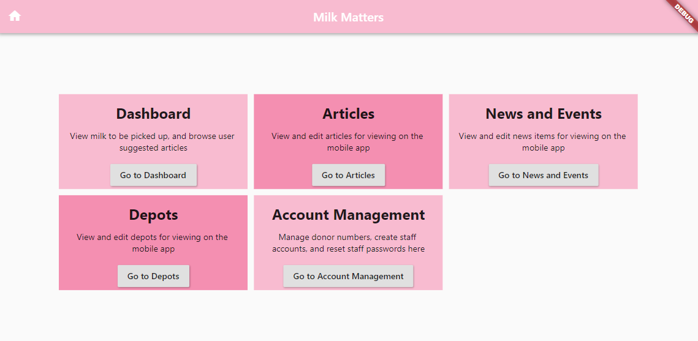
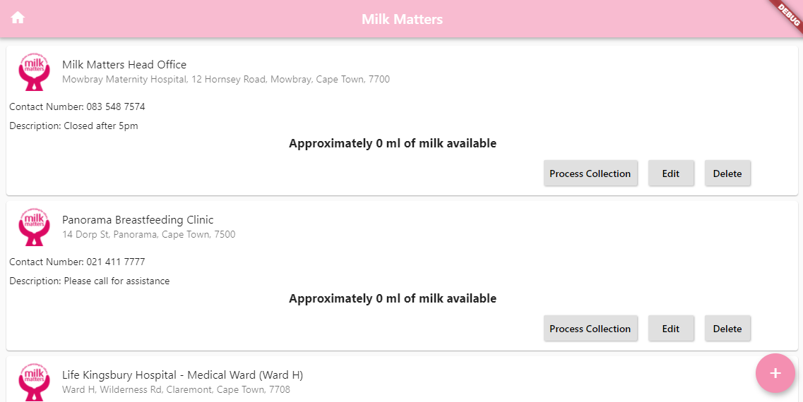
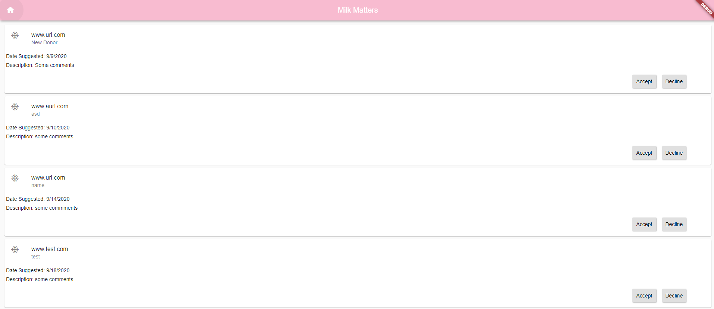
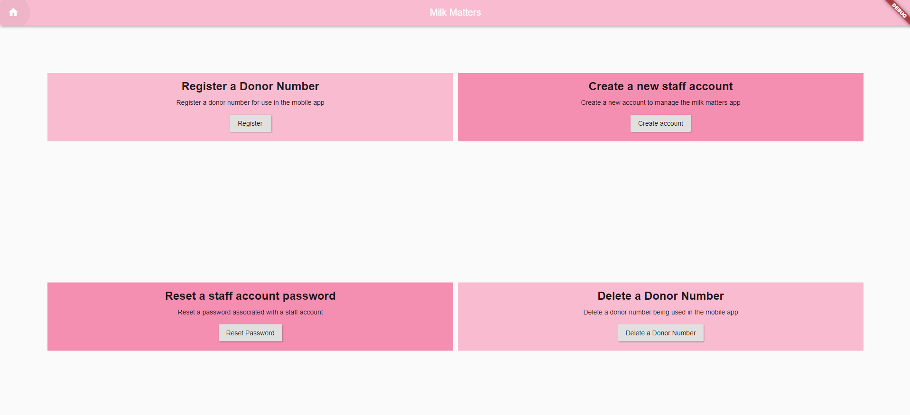

Milk Matters required an easy and fast way to update the content in the donor application. Our solution to this is the Milk Matters web interface. This web interface was designed to meet the criteria given by the staff, as well as to reflect the requirements of the donor application, found throught the interview process. The functionality is shown below.
Home
-

This is the home page of the web interface, the user lands here after logging into the web application. It is the main page for navigation.
Enabling Dynamic Content
- 
-

Milk Matters is able to add, edit and delete educational articles, depot information, and news and events items through the web interface through the use of the relevant buttons as shown on the left image. The image on the right is a screenshot of the add/edit page for educational articles.
The donors are able to suggest educatinal articles from the mobile application, which reflect on the following page. Milk Matters can then accept or reject the suggestion. If accepted, they will edit the suggested article and add it to the article list.
Account Management
-

Milk Matters can manage staff accounts for the web application in this page. Functionality is locked behind an admin password which only certain staff members have. The staff can also do a small amount of account management on donor accounts. They can add and delete donor numbers from relevant accounts, which allows donor to use functionality restricted from non-donors in the mobile application.